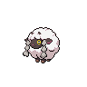

📖 英語版の図鑑説明
If its fleece grows too long, Wooloo won’t be able to move. Cloth made with the wool of this Pokémon is surprisingly strong.
日本語訳
毛が伸びすぎると動けなくなる。毛で作られた布は驚くほど丈夫。
📝 この図鑑文に出てくる英単語
| 英単語 | 意味 | 品詞 | レベル |
|---|---|---|---|
| fleece | 羊毛 | 名詞 | 大学 |
| cloth | 布 | 名詞 | 高校 |
| wool | 羊毛 | 名詞 | 高校 |
| surprisingly | 驚いたことに | 副詞 | 高校 |
文法ポイント if 〜 は「もし〜ならば」という条件を表す接続詞です。
💡 英語名「Wooloo」の由来
英語名「Wooloo」は、wool（羊毛）とloom（はた織り機、ぼんやり現れる）を組み合わせた名前と考えられている。フランス語の名前は「Moumouton」で、moumoute（かつら、羊の皮）、mou（やわらかい）、mouton（羊）から作られている。
出典 Bulbapedia
📊 ウールーの種族値
HP42
こうげき40
ぼうぎょ55
とくこう40
とくぼう45
すばやさ48
合計 270
❓ よくある質問
- ウールーの英語名は？
- ウールーの英語名は「Wooloo」です。
- ウールーの英語名「Wooloo」の由来は？
- 英語名「Wooloo」は、wool（羊毛）とloom（はた織り機、ぼんやり現れる）を組み合わせた名前と考えられている。フランス語の名前は「Moumouton」で、moumoute（かつら、羊の皮）、mou（やわらかい）、mouton（羊）から作られている。
- ウールーは英語版の図鑑でどう説明されている？
- 「If its fleece grows too long, Wooloo won’t be able to move. Cloth made with the wool of this Pokémon is surprisingly strong.」と書かれています。日本語にすると「毛が伸びすぎると動けなくなる。毛で作られた布は驚くほど丈夫。」という意味です。
ウールーは第8世代（ガラル地方ほか）のポケモンです。第8世代（ガラル地方ほか）の英語名一覧 →